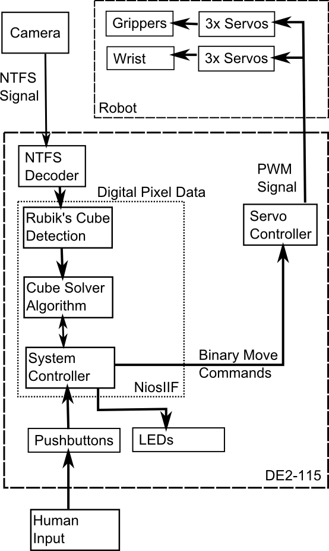
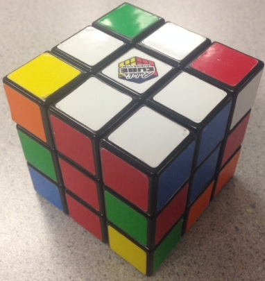
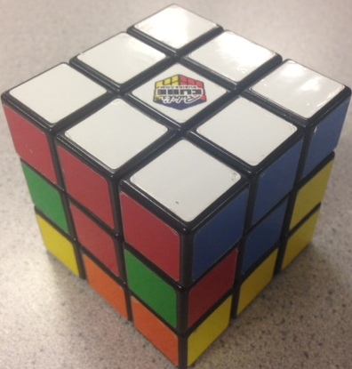
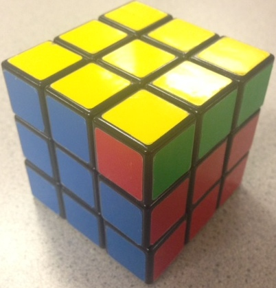
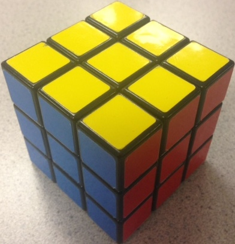
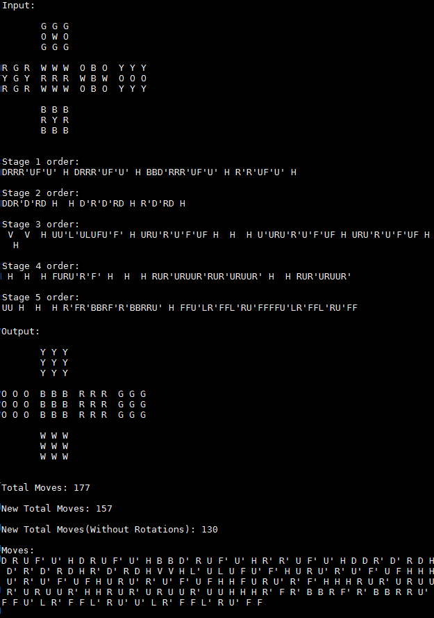
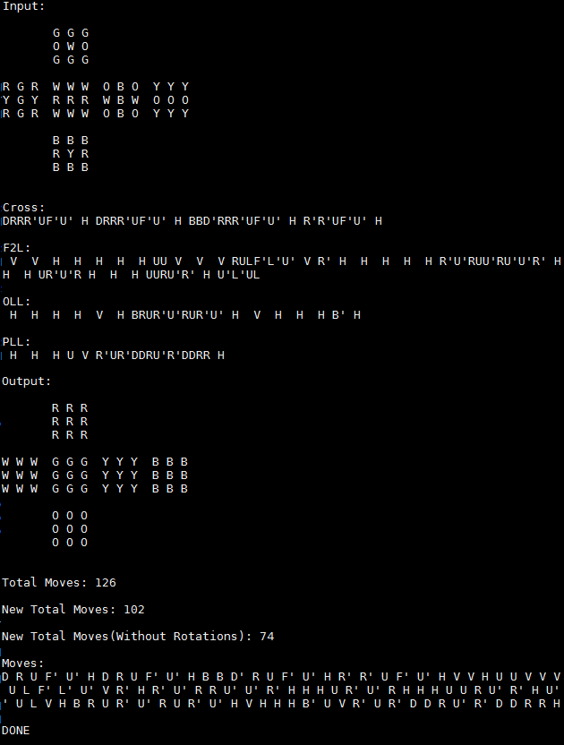
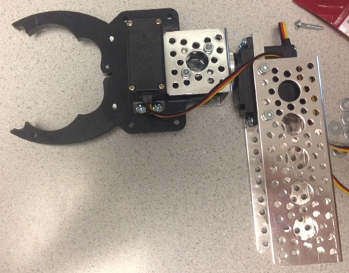

ECE 5760: Final Projects
An FPGA-Based Robotic Rubik's Cube Solver
Alex Whiteway(akw62@cornell.edu)
Sungjoon Park (sp2283@cornell.edu)
Rameez Qurashi (rq35@cornell.edu)
Introduction
We tasked ourselves with designing a mechanical Rubik’s cube solver. The mechanical arms rotate the cube to show each cube face of the cube to the camera. After each face is scanned, the cube faces are passed into the Rubik’s cube solving algorithm. The algorithm computes the moves that will be needed to solve the cube using a Nios II processor. The instructions are then fed to the FPGA, which in turn sends PWM signals to the servos to rotate the cube accordingly in order to solve the cube.
[top]
High Level Design
A variety of Rubik’s cube solvers (including a few FPGA implementations) have been created as hobby projects, but there are as of now no FPGA implementations that physically solve a cube. The other FPGA implementations merely give the user instructions on how to solve a specific cube. The most efficient Rubik’s cube solvers used more complex and efficient algorithms than we did, but because of time constraints we used a less efficient, but still effective algorithm detailed below. We sped up certain stages of this algorithm by creating lookup tables to look up the most effective combination of moves instead of computing a possibly suboptimal solution. We could have used a fourth arm to improve our solving time by decreasing the number of moves necessary to solve the cube, but we chose not to purchase a fourth arm due to budget constraints. Since the servos take up to a few seconds per move, the Nios has usually completed the solving algorithm before the arms are able to complete the first move.

{kind=link}
System block diagram
Background Algorithm
There are many Rubik’s cube solving algorithms out there. One of the popular algorithms for computing is Thistlethwaite's algorithm. It can solve the cube at most with 52 moves but it requires large number of very big lookup tables so we decided to go for the basic algorithm that Rubik’s cube website provides. It contains 5 stages:

{kind=link}
Stage 1: Solve the white cross

{kind=link}
Stage 2: Solve the white corners

Stage 3: Solve the middle layer

{kind=link}
Stage 4: Solve the top layer

{kind=link}
Stage 5: Position the yellow corners
This algorithm takes an average of ~170 moves, but it does not require big look-up tables. We tested our program based upon this algorithm during most of the development period. It may have been slow and inefficient, but it was able to solve every cube we tested.
We wanted fewer moves to solve the cube, however, so we took parts of the CFOP (Cross-F2L-OLL-PLL) method. The stages are:
Cross: Solve the white cross
- This is basically same as the basic method)
F2L: Solve the first two layers
- This essentially combines the stage 2 and stage 3 for the basic method and this is the major fact to reduce the number of moves to solve the cube
OLL: Orienting the last later
- Functionally same as the stage 4 of the basic method
PLL: Permuting the last layer
- Functionally same as the stage 4 of the basic method
For F2L, OLL and PLL, there are a limited numbers of cases: F2L has 41 for each corner, OLL has 57, and PLL has 27. We were able to successfully implement the CFOP method by generating separate look-up tables for each stage. CFOP reduced the average number of moves by ~100, resulting in an average of 60-70 moves to solve the cube.
Logical Structure
The user places a cube into the claws and uses the terminal to tell the Nios to begin solving. The NTSC camera data is then interpreted to look for cubes. Once the Nios is confident in the cube detection, it commands the servos to rotate the cube to expose another face to the camera. This sequence repeats until the full cube is scanned. Once the full cube is scanned, error correcting code attempts to locate and correct invalid configurations. After the full cube state has been determined, the Nios runs the solving algorithm to compute the move sequence, sending each move to the FPGA as it is determined. At this point, the servos begin to execute the move sequences and run until the last command. A flow chart can be seen below.
Software Tradeoffs
The main software tradeoff came with speed vs. complexity. Algorithms exist to solve any cube in approximately 20 moves. We studied these algorithms for days without being able to fully comprehend them. Because of this, we went with more basic algorithms requiring up to 10x the moves, but we fully understood it and were able to implement it without any major issues. Algorithm speed was not an issue for us since the algorithm usually finishes before the robot has completed the first move.
Hardware Tradeoffs
When designing our system, we had to choose between three (the minimum needed) or four (one on each side except top and bottom) claws. Three claws provided a lower cost, but it made solving the cube much slower. First, up to two full cube rotations are necessary to rotate a face at the cost of approximately 4 seconds per rotation. The contrasts with the four claw option, requiring a maximum of one full rotation. Second, we are not able to rotate the cube in certain directions since a single gripper cannot hold the cube when the gripper is horizontal. This problem would have been solved using four arms. Ultimately we chose to construct three claws due to cost constraints.
Standards
We had to follow a few standards for this project. For the video system, we had to use NTSC and VGA, both of which are well-know protocols. We also had to follow a standard for the servo communication, outlined in the hardware section.
Relevant Copyrights
The name Rubik's Cube and its logo are currently trademarked, however the patent has expired.
[top]
Software
Cube Scanning
The software consists of code for cube scanning and solving. The cube scanning works by reading in the raw YUV 444 data from a pixel buffer that the Altera IP video cores use to store data our camera and output it to a VGA screen. The scanning code creates 9 lowpass filter kernels at uniform locations corresponding to the expected location of cubies on each face of the cube. We use these filters on each channel of the YUV data. We chose to do this lowpass filtering to mitigate the effect of noise in individual pixels. We then created threshold values to assign a color value to each cubie based on the result of the lowpass filter of each channel. In order to reduce color misidentifications, we take 25 samples of each kernel and use the mode as the final result. For further error-checking, we compare the total amount of color values for each cubie and check it against the total number of colors of each cubie for a normal Rubik’s cube (9/color) and we rescan the cube if these numbers do not match. Because of limitations with our three arm setup only allowing us to scan 4 faces we have to use the arms to creatively rotate certain faces to present all of the cubies to the scanner, slightly scrambling the original cube orientation more in the process. This method will not allow us to present the left and right center cubies, but these are inferred in software. After the cube is finished scanning, it sends the color values of the faces to the cube solving code.
Cube Solving
Our first version was based on the beginner’s guide on Rubik’s Cube homepage but the final version was based on the CFOP method. The algorithm code was first implemented with the manual input of the scrambled cube. The algorithm prints out the original state of the cube, the moves take for the each stage, and then finally solved state of the cube. Please see below for the implementation of the both methods.

{kind=link}
This is a screenshot of the old method which is the basic method for beginner’s from the Rubik’s cube website.
Stage 1:
It checks each of the four edges on the top face and solve it one edge at a time. If it is already solved, it is going to skip this stage. Otherwise, it solves one edge then rotates the cube and solve for the next edge and so on for the rest of them. When the cross on the top is done, the program will move on to the next stage.
Stage 2:
Again, this checks each corner piece on top and if it is not the right piece, the program solves it one corner at a time. This function detects where the right corner piece is first, then moves it to the right place with the correct orientation one corner at a time.
Stage 3:
First, it flips the cube upside down and finds the right edge piece one at a time. It then solves the side cubies. Very similar to Stage 1 and 2, it locates the right edge piece first and solves one, rotates the cube and solves for another one using the same method. This continues until all the side edges are placed correctly.
Stage 4:
There are two steps in Stage 4. First we need to make a cross on the top (This is a different cross from the Stage 1 because we flipped the cube upside down right before stage 3). Depending on how the top is oriented, a sequence is applied to solve for the cross. Of course, this stage would be skipped if the cross was already there. For the second step, depending on how the corner pieces are oriented, pre-patterned sequences are applied to achieve the full color completion on the top layer.
Stage 5:
This stage also has two steps. In the first step, all four corner pieces are oriented correctly and in the second step, all the edge pieces are oriented correctly. The cube is then finally fully solved. These two steps are done by separate pre-patterned sequences.
CFOP Method
{kind=link}
This is a screenshot of the new method which is CFOP method that is much better than the basic one. If you see the total move count of this new method, it is significantly better than the old one. The old one had 137 moves (which is one of the better cases) and this one has only 72 moves.
Cross:
It checks each of the four edges on the top face and solves it one edge at a time. If it is already solved, it is going to skip this stage. This is pretty much same as the Stage 1 in the basic method.
F2L:
This is a combination of the Stage 2 and the Stage 3 from the basic method. Instead of solving one edge and corner at a time, it checks every single case of the corner and edge pieces, and solves both of them together. This is done by creating a large look-up table that contains 41 unique cases for each edge/corner. This stage mainly reduces the move count compared to the basic method.
OLL / PLL:
These two steps contain large look-up tables ascwell. OLL has 57 different cases and PLL has 27. It checks how the cube is orientated first then goes to the look-up table to find the most efficient sequence to solve the cube. Since these moves are optimized, and it is not solving one corner/edge at a time, it can reduce a large number of moves.
For versions of the code, there is an optimization at the end before it passes the moves to the FPGA. This part of the code removes unnecessary or redundant moves from the solutions such as RR’, UU’ or HHHH etc. After all these, all the moves are stored in an array which is ready to pass to the FPGA for the robot arm movements.
[top]
Hardware
Since the servos need a consistent PWM source, it was implemented in hardware so the Nios did not have to have many different timer interrupts. The hardware can be broken into multiple stages: mechanical hardware. servo control, Nios communication, and move execution.
Mechanical Hardware
Robotically solving a Rubik’s cube required at least three mechanical arms. Though we would have preferred a fourth, it was cost prohibitive. The mechanical portion consists of three arms like the one pictured below. Each arm is built with a vertical metal support bar holding a servo. This servo provides the rotation. Attached to this servo is a mechanical claw. Each claw has a servo to control the grip position. This allows the two degrees of freedom needed to grab and rotate the cube. The servos are connected to the FPGA through the 40-pin GPIO header via a breakout board.

{kind=link}
Assembled Claw
Servo Control
The servos need a constant PWM-like signal. The servos need a 20ms cycle time. Within that cycle, a 7.5% duty cycle represents -90 degrees, while a 12.5% duty cycle represents +90 degrees. Anything in between these values will produce a proportional angle. Since the servos have a PID controller built in, they will not drift from their commanded values, even under load. The servo control hardware uses a 3.277 MHz clock from the PLL to create these signals. This clock speed was chosen because a 16-bit counter will overflow every 20ms. The move execution hardware assigns each servo a specific 16-bit value corresponding to the desired duty cycle. If the counter is less than the assigned value, the output is high. Once the timer is greater than the assigned value, the pin is set to low, creating the desired effect. This occurs for each of the 6 servos.
Nios Communication
Since the Nios processor runs the solving algorithm, it must somehow communicate the results to the hardware. We created an 8-bit bus to accomplish this task, with the bit definitions shown in the table below. There are 16 total move possibilities, thus we needed four bits to represent this. Once the Nios decides on one of these moves, it is written to the output port with the clock low, then written again with the clock high, both with the WE pin high. This clock pin provides the clock to an M9K block that stores the move sequences. The Nios keeps track of the address. This prevents the Nios from needing a wider or additional output port. Each time a move is clocked into memory, the address is incremented. Before the Nios begins to solve the cube, the reset pin is pulsed to alert the hardware to reset the writing address to 0. The final pin is the finished pin. This tells the move execution hardware that no more instructions will be written, allowing it to release the cube when it is finished.
Nios Communication Protocol
| Bits | Function |
|---|---|
| 0-3 | Move Type |
| 4 | Clock |
| 5 | Reset |
| 6 | Write Enable |
| 7 | Finished |
Move Command Definitions
| Move Type | Function |
|---|---|
| 0 | Up Face Clockwise |
| 1 | Up Face Counterclockwise |
| 2 | Down Face Clockwise |
| 3 | Down Face Counterclockwise |
| 4 | Back Face Clockwise |
| 5 | Back Face Counterclockwise |
| 6 | Front Face Clockwise |
| 7 | Front Face Counterclockwise |
| 8 | Left Face Clockwise |
| 9 | Left Face Counterclockwise |
| 10 | Right Face Clockwise |
| 11 | Right Face Counterclockwise |
| 12 | Horizontally Rotate (Pointers Only) |
| 13 | Vertically Rotate (Pointers Only) |
| 14 | Horizontally Rotate (Physical Rotation) |
| 15 | Vertically Rotate (Physical Rotation) |
Move Execution
This is the most complex piece of hardware. The move execution hardware consists of a large state machine with the following states: startup, idle, move, moveDelay, startMove, determineFace, determineRotation, determineRotateCommand, and moveFinished.
startup: This is the default state when the FPGA powers on. Here, the state variables are reset and the claws are set to vertical positions with open grips. This prevents the claws from hitting each other. From here the state transitions to idle.
idle: This state waits for a move to be put into memory. It does this by keeping track of the address of the last move executed and comparing it to the last address written. If the addresses are the same, there are no moves to execute and the state machine waits here. If there is a difference between these addresses, that means at least one move is in memory that has not been executed. This causes the state to transition to startMove.
startMove: This state retrieves the next move from memory and increments the read address. It also adds to the total move counter. This counter is also used to determine if the servos should be recalibrated, meaning they turn in a specific way to readjust the cube position in the claws to prevent cube drift. The state then transitions to determineFace.
determineFace: This state checks the move to be executed and determines which face of the cube needs to be rotated and in which direction. Alternatively, the entire cube may need to be rotated, which is also accounted for and calculated in this stage. Once it knows which face to turn in which direction, the state transitions to determineRotation.
determineRotation: This state determines where the face to be rotated currently resides. The Nios may command it to rotate the front face, but due to optimizations we made, the front face may be physically represented by any face, not a face in a specific location. This state figures out if the full cube must be rotated to get that face inside of a claw since the claws only grip three faces at once. In addition, some moves may require no physical movement at all. One of the main features of the solving algorithms is rotating the cube with respect to the person solving. This does not require a physical movement, however, and only pointers need to be updated in memory. This state handles all of these updates. The state then transitions to determineRotateCommand.
determineRotateCommand: After the previous state updates the pointers in memory (if needed), this state determines the physical rotation needed to complete the move. This includes determining which claw to rotation in which direction. After this is determined, the move state executes the moves.
move: Rotating the cube or a face on the cube requires multiple servo actions. For example, rotating the front face requires: rotating the claw, releasing the claw, returning the claw to vertical, and closing the claw. These move sequences for all six servos are stored in a large array. This state iterates through the array completing one step at a time. Since the servos take up to 0.5s to complete a move, the state transitions to moveDelay after each step.
moveDelay: This step is basically a counter that waits until a certain number of clock cycles have elapsed. Once the desired amount of time has elapsed, the state returns to move if there are more moves to execute in the sequence. If the moves are complete for the current sequence, the state transitions to moveFinished.
moveFinished: This step simply cleans up any variables it needs to before returning to idle to wait for the next command from the Nios.
[top]
Results
Each claw action (grab an edge, release an edge, rotate an edge) takes ~.5s and each move needs 2-10 claw actions. To completely scan all faces of the cube takes 20 moves. The amount of time to scan each individual face is negligible. The cube can be solved in 60-70 moves on average using the improved CFOP method. This gives a range of 20-100s to scan the cube and a range of 60-350s to solve. The solving is 100% accurate, meaning a correct cube is generated every time. The scanning is around 98% accurate, meaning often one cubie out of 54 scanned is read incorrectly necessitating a cube rescan. There is an issue where sometimes a white cube will be incorrectly scanned as blue, or very rarely a green cube will be read in as white. For safety and practicality reasons, SW[0] on the FPGA is used to instantly deactivate the claws. This is necessary because sometimes due to drift the cube will not align well with the claws and the cube could break because of shear forces applied by the servos. This is also a valuable safety feature in case a person gets a body part trapped in the claws. The setup is very easy to use in optimal circumstances: the user places the cube in the claws oriented so the white center cubie points up and the red center cubie faces directly away from the camera, presses enter in the terminal, activates the servo switch, and then the cube solver works its magic. After the cube is finished solving, the cube is dropped by the servos and the user can press enter in the terminal again to start the process over. One issue with usability is that our scanner is sensitive to changes in light intensity even though we used YCbCr color space which is less sensitive to changes in light intensity than RGB color space, so the user must take care to use the solver in a well and consistently lit area and to not get close enough to the camera to darken the light intensity too much. The user can use an optional VGA screen to check if the lighting is interfering with cube scanning because a box will appear on the VGA screen showing the cubie that the scanner is having issues trying to read. There is nothing in our design which could interfere with other technologies.
[top]
Conclusions
Did Our Design Meet Expectations?
The results did not quite meet our expectations (100% solve rate, 100% scanning accuracy, a solve time of under 3 minutes not including scanning time). We met the solve rate criteria and were close with scanning accuracy, but our design is much slower than our original goal solve time. Given more time, we would like to implement more efficient algorithms in order to reduce solve time even further. The most efficient algorithms solve a cube in 20 moves or less, however these are difficult to implement in such a short amount of time. We also would like to increase our scanning accuracy to 100%. With our current setup, the whole cube has to be rescanned if the scanned cube is incorrect. We will change this to only rescan those faces which contain a color that is detected more than expected, or to infer aberrant cubies based on the color of its neighbors. We also would have liked to add a fourth arm since it will reduce the amount of actions needed by the claws to perform a move which would decrease total solving time, and reduce the scanning time since we could scan the whole cube with only 6 rotations. Though the solver did not meet all expectations, it performs reasonably well.
Did Our Design Conform to Standards?
Our video system had to conform to NTSC and VGA standards. IP modules implementing these standards were provided by the Altera University Program.
Intellectual Property Considerations
In our scanning setup we used Altera University Program Video IP cores and example code provided by the Altera University Program.
Legal Considerations
Patents for the Rubik's Cube have expired, only the logo and name remain trademarked.
[top]
Appendices
A. Image Gallery
B. Code
Video
Solving
Hardware
C. Parts List and Costs
Hardware
C. Parts List and Costs
| Part | Vendor | Cost/Unit | Quantity | Total Cost |
|---|---|---|---|---|
| 1.5" Aluminum Channel | Sparkfun | $2.99 | 3 | $8.97 |
| 4.5" Aluminum Channel | Sparkfun | $4.99 | 3 | $14.97 |
| Servo Hub | Sparkfun | $3.99 | 3 | $11.97 |
| Servo Mount | Sparkfun | $6.99 | 3 | $20.97 |
| Gripper Kit | Sparkfun | $9.95 | 3 | $29.85 | Servo | Sparkfun | $9.95 | 6 | $59.70 | Base Board | Lowes | $10 | 1 | $10 |
| Screws | Lowes | $5 | -- | $5 |
| TOTAL: | $161.43 |
D. Division of Labor
Though the following was our agreed upon division of labor, we all helped each other significantly.
Alex Whiteway
- Hardware
- Code Integration
Sungjoon Park
- Solving Algorithm
- Optimizations
Rameez Qurasi
- Cube Scanning
{kind=link}